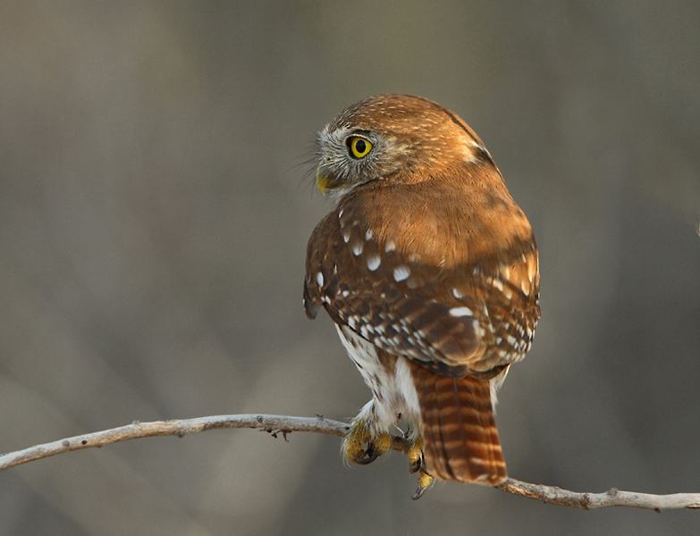
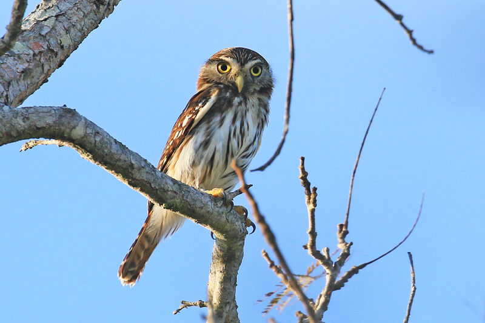

MOCHUELO CABIRÉ
Glaucidium brasilianum
Glaucidium brasilianum
Características principales

Mide entre 15-19 cm de largo y pesa entre 60-75 gr. Las hembras son más grandes y pesadas que los machos. Especie extremadamente polimórfica con gran variación en la coloración de su plumaje presentando dos fases, grisácea y rojiza. Con disco facial café claro y pequeñas marcas blancuzcas. Cejas claras, ojos amarillos y pico amarillo grisáceo. Cabeza café con rayas y manchas blancas. Una mancha negra a cada lado de la parte posterior del cuello, ambas comúnmente llamadas ojos falsos. Cuerpo en general café-grisáceo con rayas cafés. Cola café oscuro con barras claras. Tarsos emplumados hasta talones. La fase rojiza presenta el mismo patrón de coloración pero con tonos rojizos o café-anaranjados. Juveniles similares a los adultos pero con patrones de coloración clara
Distribución

Vive desde Arizona en Estados Unidos, pasando por México y Centroamérica hasta Argentina en Suramérica. Es residente permanente a lo largo de la región Atlántica y de la costa del Pacífico. En México se distribuye en ambas vertientes, asimismo en la península de Yucatán, ausente en la península de Baja California. Las poblaciones más al norte podrían ser migratorias. Habita tierras bajas y diferentes tipos de vegetación como bosques tropical, ripario, de galería y deciduo; asimismo en manglar, matorral espinoso, vegetación secundaria, bordes de bosques, plantaciones de café y áreas semi-urbanas. Se distribuye desde 0 hasta 1,500 m, regularmente hasta los 300 m en el este de su distribución y hasta los 1,500 m en el oeste. En Centroamérica su rango altitudinal va hasta los 2,000 m, en las tierras altas de Venezuela y Guyana hasta los 2,250 m y en Perú hasta más de los 3,000 m. La UICN2019-1 considera a la especie como de preocupación menor. Aunque la especie está ampliamente distribuida y es común en su rango de distribución, existe poca información sobre su biología y factores que podrían estar afectando a sus poblaciones, se desconoce como factores estocásticos como huracanes y factores determinísticos como fragmentación de bosques por actividades humanas podrían afectarle. A pesar de pertenecer a las aves rapaces nocturnas (Strigiformes) esta especie a menudo caza de día.